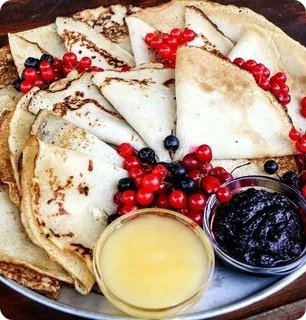

Поддержка
Вы можете выбрать кулинарные направления
Фастфуд
Фастфуд – это быстрая еда, созданная для удобства и скорости. Она включает популярные блюда, такие как бургеры, картофель фри, пиццу и многое другое. Быстрые и сытные закуски подойдут для перекуса на ходу или для полноценного приема пищи.

Русская кухня
Русская кухня – это сочетание сытных, ароматных блюд, которые дарят уют и тепло. Борщ, пельмени, блины, соленья и традиционные каши – всё это создаёт особую атмосферу и насыщает разнообразием вкусов. Настоящая русская еда для тех, кто ценит традиции и домашний комфорт.Вьетнамская кухня
Вьетнамская кухня – это свежесть и яркость вкусов: тонкий баланс кисло-сладких, пряных и соленых нот. Фо, спринг-роллы, бун бо – всё это блюда, наполненные свежими травами, рисовой лапшой и экзотическими специями. Настоящее гастрономическое путешествие в Азию, где каждый кусочек дарит новые впечатления.